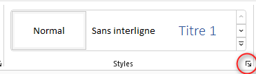
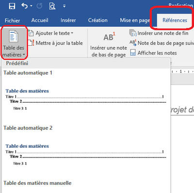
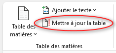

VII) Styles et table des matières
1. Les styles
Un style est un outil qui permet d'enregistrer une mise en forme et de l'appliquer à un ou plusieurs éléments de texte.
Si vous modifiez un style, tous les paragraphes rattachés à ce style seront modifiés d'un seul coup.
Pour insérer un style:
✔Sélectionnez le texte auquel le style est appliqué dans votre document
✔ Dans le groupe «Style» de l’onglet «Accueil», cliquez sur le style que vous voulez appliquer au document

2. Table des matières
a. Insérer une table des matières
✔ Placez le curseur à l’endroit où vous voulez ajouter la table des matières.
✔ Dans le groupe «Table des matières» de l’onglet «Références», Sélectionnez un type de format pour votre table des matières

Remarque:
Pour qu’un titre figure dans la table des matières, il faut lui appliquer le style approprié.
b. Actualiser la table des matières
✔ Sélectionnez la table des matières dans votre document Word.
✔ Dans le groupe «Table des matières» de l’onglet «Références», Cliquez sur le bouton «! Mettre à jour la table»
